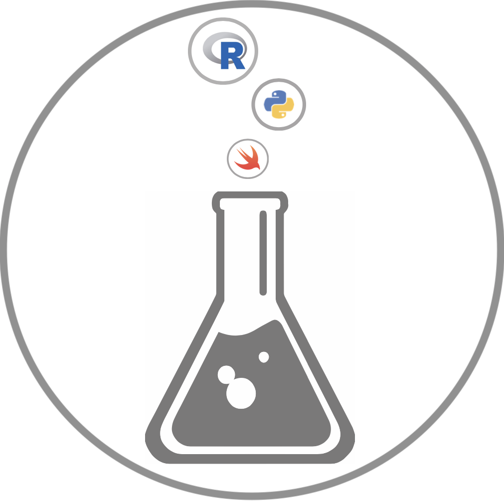

Data Scientist & Software Developer with a background in chemistry, forensic science, and machine learning. Turning complex data into actionable insight.

I'm a data scientist and software developer whose career spans forensic toxicology, mass spectrometry, neural network development, and graduate-level data analytics. That breadth gives me a rare ability to move comfortably between the lab bench, the command line, and the boardroom.
I hold master's degrees in both Data Analytics (Oregon State University) and Biochemistry (OHSU), and a B.S. in Chemistry from the University of Colorado. This science-first foundation shapes the rigor I bring to every data problem.
Outside of work I'm passionate about data visualization, open-source tooling, and teaching — I've instructed courses in Perl, HTML/CSS, JavaScript, and Chemistry.
Analyzed and cleaned data for Roosevelt Wilderness Area in Colorado. Developed random forest models in R to predict cover-type by covariates with ~90% accuracy.
Developed ARIMA time series models to forecast Hepatitis A infection rates in Oregon based on historical epidemiological data.
Analyzed ~1.7 GB of US solar data using bash tools and SQLite to query data into pandas DataFrames; results archived in CSV and JSON formats.
Contributed to the annual Wall Street Journal Best Managed Companies ranking, sourcing, cleaning, and integrating multi-year corporate performance data across hundreds of companies to produce the published metrics and scores.
Worked on the Wall Street Journal Best Boards ranking, compiling and analyzing governance and board-performance data across major U.S. companies to support the published results.
I'm open to challenging roles in data science, analytics, and software development — especially where a scientific mindset and cross-disciplinary experience add real value.
Whether you have a project in mind, a question about my work, or just want to connect, feel free to reach out through any of the channels below.